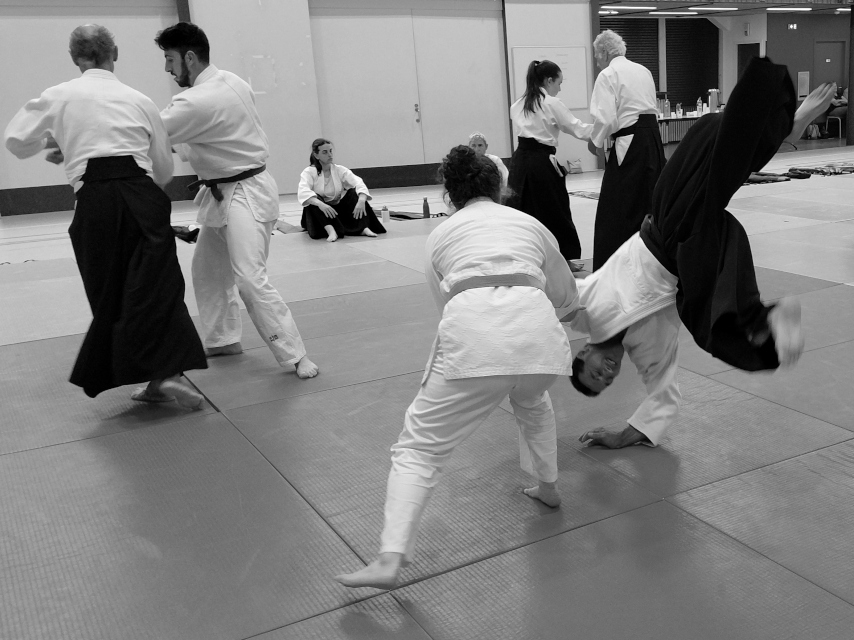

Philosophie
L'harmonie plutôt que l'affrontement.
L'aïkido (合気道, « la voie de l'harmonie des énergies ») est un art martial japonais fondé au XXe siècle par Morihei Ueshiba. Sa particularité : ne jamais opposer la force à la force.

C'est quoi, l'aïkido ?
Utiliser l'énergie de l'adversaire plutôt que la force brute.
Plutôt que de résister frontalement à une attaque, le pratiquant apprend à en accompagner le mouvement pour la rediriger, déséquilibrer et neutraliser sans blesser. C'est un art martial complet : il combine projections, immobilisations, clés et travail aux armes traditionnelles.
Les principes fondateurs
Trois idées qui traversent toute la pratique.
Respect
Du partenaire, du dojo, de soi-même. Le respect n'est pas une formalité : c'est ce qui rend la pratique possible.
Harmonie
Ne pas s'opposer, mais accompagner. Neutraliser une attaque sans chercher à dominer ou blesser.
Progression
Pas de compétition, pas de classement. Le chemin compte plus que la performance immédiate.
Le travail aux armes
Une tradition martiale japonaise à part entière.
L'aïkido intègre le travail aux armes traditionnelles japonaises, introduites progressivement selon le niveau du pratiquant.
Bokken
Sabre en bois, utilisé pour travailler les principes de coupe, de distance et de posture.
Tantō
Couteau ou poignard en bois, pour les techniques de défense face aux attaques rapprochées.
Katana
Sabre japonais, abordé pour approfondir les principes qui fondent les techniques à mains nues.
Jō
Bâton court, pour développer la coordination, la distance et le contrôle du mouvement.
Pour qui ?
Un art de vie, pas seulement un sport.
L'aïkido n'a pas d'exigence de force ou de morphologie particulière. Il s'adresse à toute personne, dès 12 ans, qui souhaite développer sa confiance en soi, sa maîtrise du corps et son calme face aux situations de tension — sur le tatami comme dans la vie quotidienne.
Bienfaits
Ce que la pratique apporte, sur le tatami et en dehors.
Sur le plan physique
Souplesse, coordination, gainage et réflexes se développent progressivement, à un rythme adapté à chacun.
Sur le plan mental
Concentration, gestion du stress et confiance en soi se travaillent séance après séance.
Rejoignez-nous
Envie de ressentir l'aïkido par vous-même ?
Deux séances d'essai gratuites, sans engagement, pour découvrir la pratique.